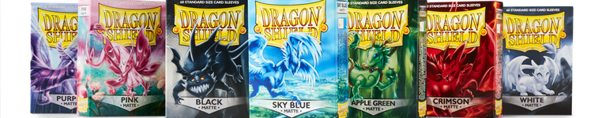
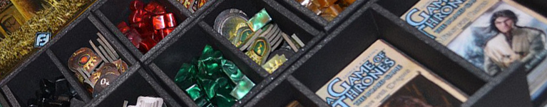
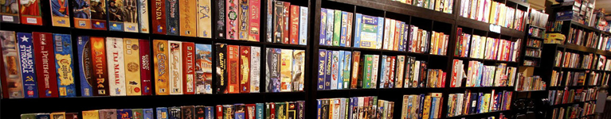
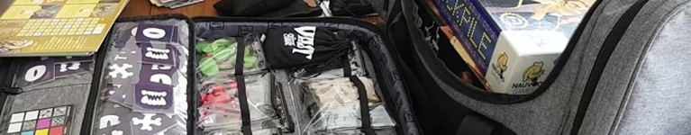

blogpostdescription: Tutte le volte che aprite la scatola del vostro gioco preferito, le carte e le tesserine vi assaltano in massa? Siete stufi di portarvi in giro a mano il vostro carico da 12 german? Ludimus sa cosa fare
Non mi voglio nascondere dietro a un dito: una volta giocavo a “Risiko!”.
Tanto. E mi piaceva pure.
Facevo tante di quelle partite da avere le carte sporche e consumate più di quelle da briscola di mio nonno.
Quel gioco mi piaceva a tal punto che me lo portavo spesso in giro: al bar, a casa di amici, in baita… Una volta l’ho messo in valigia e l’ho portato in viaggio addirittura a Bruxelles. Solitamente lo trasportavo dentro un sacchettone della spesa, in verticale, col risultato che la promiscuità di carrarmatini che andava creandosi donava alla scatola un non molto gradevole effetto arcobaleno.
Quando avevo otto anni, mio fratello ne aveva quattordici (e dunque anche un pizzico di senso pratico in più) e aveva trovato un metodo fighissimo per separare gli scomparti della scatola con del nastro adesivo. Qualche pedina saltava ancora la barriera, ma erano casi così rari che il problema era praticamente risolto. Rimaneva però il rischio che la scatola si aprisse e che tutto si rovesciasse spargendosi nel sacchetto di plastica. Se non era bucato andava di lusso.
Per scongiurare ogni pericolo avevamo pensato: “però, perché non usare del nastro adesivo anche per tenere chiusa la scatola?” Quindi, si usava del nastro di carta. Ma quando non c’era, anche quello isolante faceva il suo lavoro…
Ad oggi, credo preferirei farmi la ceretta piuttosto che dover staccare dello scotch dalla scatola di un gioco da tavolo. Eppure, nonostante abbia rimosso lo scotch dalla mia vita, le mie scatole sono ancora tutte in ordine.
E dunque eccomi qui a riflettere. Cos’è cambiato da allora?
Non risponderò direttamente alla domanda. O meglio, dato che le risposte che potrei dare sarebbero tutte sul “boh?” o sul “un po’ tutto”, dedicherò il resto dell’articolo al solo mondo dei giochi da tavolo.
Quel che è certo è che oggi esiste un mondo di appassionati molto più attenti alla cura dei propri giochi e il mercato si è adeguato a fornire i prodotti necessari per dare risposta a domande sempre più esigenti.

Iniziamo parlando di carte e bustine.
Per mia esperienza, esistono ancora degli irriducibili filosofi della vecchia scuola che, una volta pagato un tot per un gioco da tavolo, non imbustano le carte che contiene. C’è chi lo fa per sentire il feeling della cellulosa sulle dita, chi per pigrizia, chi per pura e semplice avarizia.
Molti trovano un giusto equilibrio tra i due estremi imbustando solo quelle carte che richiedono mescolamenti frequenti.
Altri, nei quali rientro io, imbustano qualsiasi carta, andando a caccia delle bustine più appropriate, a prescindere dalla stravaganza del loro formato.
E poi ci sono i radicali, quelli che imbustano due volte le carte, i tassellini di cartone, di legno, di plastica, quelli che plastificano le plance e conservano anche le fustelle. Su un forum di “Star Wars Destiny” c’è stato qualcuno che ha perfino chiesto informazioni su degli spray da applicare per poter proteggere i dadi dall’usura!
Alcuni più, altri meno, tutti i giochi vanno incontro a un inevitabile deterioramento. Questo non significa però che si debba restare inerti, aspettando l’ora della pattumiera. Credo che oltre ad un fatto puramente funzionale ed estetico, preservare un gioco da tavolo sia anche una questione economica, qualora si decidesse di rivenderlo o scambiarlo.
Quindici anni fa non avrei mai pensato di rivendere il mio adorato “Risiko!”, anche perché nessuno me lo avrebbe comprato. Oggi, però, la situazione è diversa: un mercato dell’usato dei giochi da tavolo esiste eccome, e funziona alla grande.
Perché questo cambiamento? Probabilmente la causa è l’ascesa in popolarità dei giochi di carte collezionabili, primo fra tutti “Magic: The Gathering”, per il quale lo stato di conservazione di quei pezzi di cellulosa era ed è oggi specialmente un metro fondamentale per definirne il valore effettivo. Da qui, l’esigenza di conservare le carte nel miglior modo possibile e la diffusione di questa pratica anche nel mondo dei giochi da tavolo.
A differenza dei giochi di carte, in cui un appassionato ha da far fronte a un solo formato di bustine, per alcuni giochi da tavolo è necessaria una maggiore ricerca ed esborso per proteggere i propri acquisti: esistono più di venti formati di bustine, a volte differenti solo per qualche millimetro, ed esistono grammature (spessori) diversi, che si portano dietro anche prezzi e catalogazioni differenti a seconda del produttore.
Un ginepraio dal quale BoardGameGeek ci aiuta a uscire, così come ci ha raccontato il nostro buon Riccardo nel suo articolo.

Ora che avete speso qualche euro in più e avete passato un buon quarto d’ora ad imbustare tutte le carte del vostro nuovissimo gioco, siete pronti per riporle nuovamente nella scatola. Sorpresa! Adesso che sono avvolte dalla plastica non entrano più nel loro scompartimento. Se solo qualcuno avesse pensato a un modo per risolvere questo problema!
Parliamo un po’ di inserti. Un inserto è uno scompartimento sagomato in plastica, solitamente nero, in cui riporre tutti i componenti di un gioco. Spesso sembra studiato perfettamente, con ogni cosa che trova il suo spazio preciso, ma poi si trasporta il gioco o lo si ripone in verticale e alla successiva apertura della scatola sembra che vi sia esplosa dentro una granata. Oppure si verifica il caso anticipato prima di inserti fatti male in cui non è stato previsto quel millimetro in più che permetta di collocarvi le carte imbustate.
I radicali tolgono completamente l’inserto, estirpando il problema alla radice, riponendo le componenti in sacchettini, ammucchiati direttamente nella scatola.
Se si vuole spendere invece qualche euro in più, si possono acquistare o creare appositi inserti personalizzati per le proprie esigenze. Anche in questo caso, a domanda risponde offerta, con la vendita di scompartimenti in compensato, spugna (soprattutto per lo stoccaggio sicuro di miniature fragili), e l’ideazione di progetti per la stampa 3D comodamente a casa.
Ma se nei precedenti paragrafi è stata la scelta economica e radicale di rimuovere l’inserto a destare la vostra attenzione, non preoccupatevi, perché la soluzione per evitare l’effetto granata esiste e si chiama, nel gergo, ziplock.
Una ziplock, come dice il nome stesso, altro non è che un sacchettino di plastica trasparente, con una chiusura a zip. Attenti però! Se il gioco è composto da troppe componenti si rischia l’effetto discarica, con moltitudini di sacchetti ammucchiati e ore perse per trovare le pedine necessarie. Cercate di operare le vostre scelte di conseguenza.

Molto bene. Ora avete le vostre scatole, con tutte le componenti ben protette e organizzate. Quello di cui avete bisogno adesso è un posto dove metterle.
Sì, lo so: gli scaffali li hanno inventati nell’ennemila e passa avanti Cristo, ma a noi non bastano dei volgari scaffali.
Non penso che il signor Kallax, amico della signora Ikea, avesse pensato ai giochi da tavolo quando creò il suo mobile. Fatto sta che un giorno qualcuno ha deciso di appoggiare una scatola di “Ticket to Ride” su uno di quei scaffali e si è reso conto di come lo stesso la accogliesse amorevolmente.
Perché questo improvviso non sequitur? Non ci siamo svenduti alla Svezia, ma che il Kallax sia veramente un bel mobiletto per noi appassionati è un dato di fatto. Moltissimi appassionati ne hanno acquistato uno (o due, o sedici) per la propria collezione.
Ma voi… I giochi li tenete in verticale o in orizzontale?
Fare questa domanda ad un gruppo di giocatori è come aprire il vaso di Pandora. Le risposte che girano sono sempre due: “In verticale, così è più comodo prendere il gioco che voglio e le scatole non vengono schiacciate” o “In orizzontale, così leggo meglio i titoli e le componenti rimangono al loro posto”. Il dibattito che ne segue è feroce e spesso violento.
Noi sul punto non ci esponiamo, perché teniamo famiglia.
E una volta sistemate per bene le pareti, perché non pensate di cambiare anche il vecchio tavolo da pranzo? Magari uno che abbia tutti i comfort per un’esperienza di gioco indimenticabile. Non venitemi a dire che un tavolo vale l’altro! Volete mettere la sensazione di un tappetino di panno, leggermente gommato per poter sollevare le carte senza fatica? E del dislivello fra ripiano e cornice esterna da cui stare comodamente appollaiati con la piena visuale della situazione? Se poi avete il terrore che i bicchieri si rovescino rovinando irrimediabilmente tavolo e gioco, esiste anche l’accessorio del portabicchieri. Per non parlare dell’irrinunciabile striscia led per un perfetto stile Poker Texano!
Se poi volete mangiarci la pastasciutta, ricordatevi prima di metterci sopra le assi per coprirlo e quindi convertirlo in un normale tavolo da pranzo.
Se siete appassionati dei giochi di ruolo poi, esistono poi tavoli che prevedono altri tipi di dislivelli e aggiunte come un monitor per un rapido accesso alle mappe e ai luoghi che gli avventurieri si troveranno ad affrontare.
L’argomento dei tavoli da gioco è sterminato e fin troppo interessante per esaurirlo con un articolo solo. Ci torneremo sopra di sicuro.

Ora che anche l’arredamento è stato sistemato è tempo di pensare alla trasferta. Siete stati invitati a cena dagli amici e vi hanno chiesto di portare qualche gioco dalla vostra super Kallaxteca, ma vi siete accorti che avete usato l’ultimo sacchetto per buttare l’umido. Forse sarebbe stato il caso che vi foste informati sui cajon.
Tranquilli: non sto insultando nessuno. Il cajon è uno strumento musicale a percussione, che consiste di fatto in un delicato parallelepipedo che ricorda una grande cassa di legno. Si trasporta in borse o zaini imbottiti che lo mantengono fermo e lo proteggono dagli urti e dalle intemperie.
Per coincidenza, anche in questo caso “qualcuno” ha provato a mettere la sua scatola di “Ticket to Ride” nel borsone del cajon e si è reso conto di come lo stesso la accogliesse amorevolmente. Il rimedio è artigianale, ma tremendamente efficace. È del resto particolarmente apprezzato dai produttori di borse cajon, che si sono trovati migliaia di nuovi clienti da un giorno all’altro senza sapere perché.
Anche se di recente sono state commercializzate borse specializzate e sono apparsi diversi progetti del genere su Kickstarter per crearne di ultra-lussuose per il trasporto di giochi da tavolo, al momento le borse da cajon sembrano essere il compromesso migliore fra prezzo e funzionalità.